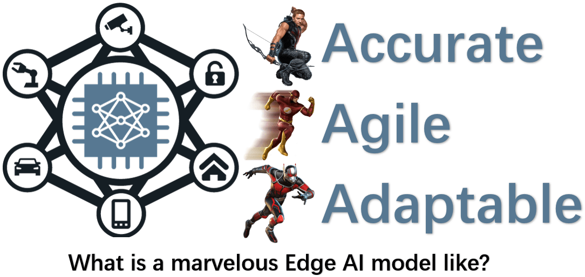
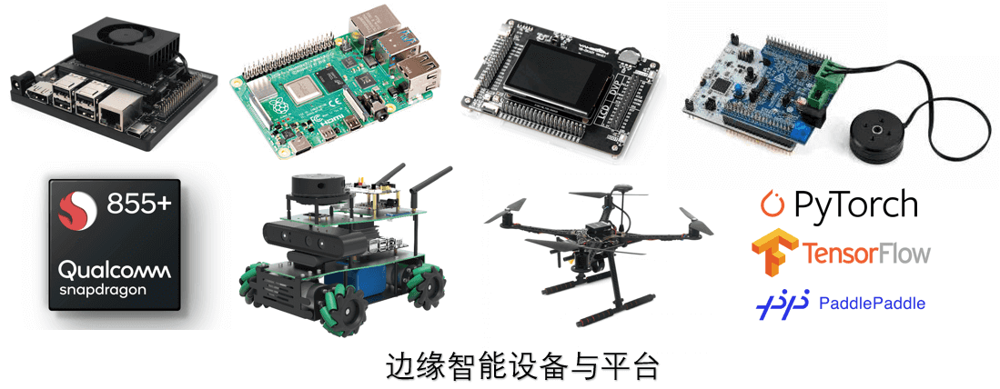
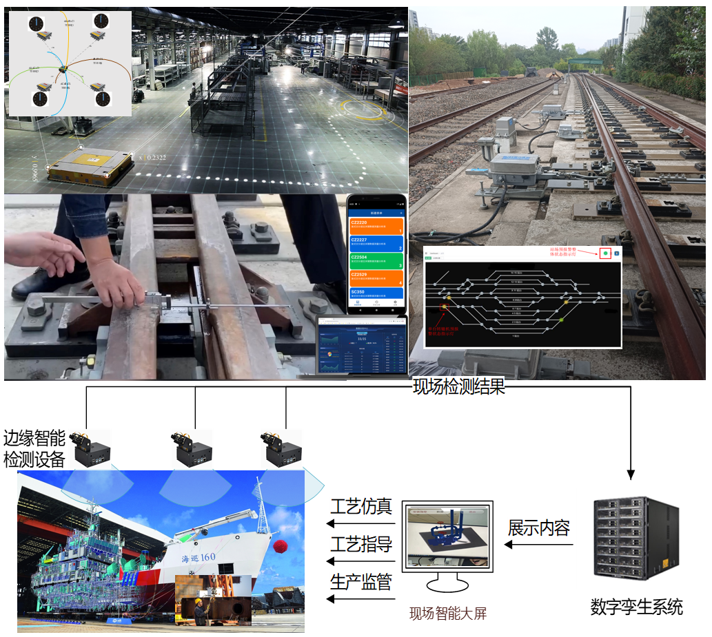

边缘计算与边缘智能
边缘计算是在靠近物或数据源头的网络边缘侧，融合网络、计算、存储、应用核心能力的分布式开放平台，就近提供边缘智能服务，满足行业数字化在敏捷联接、实时业务、数据优化、应用智能、安全与隐私保护等方面的关键需求。
简而言之，我们的研究工作是在设备资源受限的条件下，实现边缘侧实时智能计算，为工业应用和终端用户提供服务。
我们崇尚学以致用的科研模式：理论研究 + 系统实践 + 工程应用 + 人才培养，欢迎产学研合作，欢迎加入我们。
核心问题

研究内容


承担项目：感谢对我们科研工作的资助
- 主持国家自然科学基金面上项目：面向工业物联网中时效敏感DNN推理计算的边缘智能关键技术研究
- 主持北京市自然科学基金-丰台轨道交通前沿研究联合基金：面向资源受限的轨道交通车载设备高效推理的边缘计算关键技术
- 主持校企合作项目：基于边缘智能的船舶工业互联网边缘计算系统
- 主持校企合作项目：基于边缘计算的铁路道岔智能测量系统
- 主持校企合作项目：基于物联网和数字孪生的铁路转辙机智能分析系统
- 主持复杂零部件智能检测与识别湖北省工程研究中心开放课题：面向钢材表面缺陷检测的边缘AI技术研究
- 主持中国轻工业工业互联网与大数据重点实验室开放课题：面向边缘计算深度神经网络模型的协同推理机制
- 主持工业物联网与网络化控制教育部重点实验室开放课题：面向工业互联网实时数据处理的边缘计算与缓存优化技术
- 主持赛尔网络下一代互联网技术创新项目：面向IPv6物联网智能识别应用的边缘计算技术研究
- 主持教育部产学合作协同育人项目(谷歌)：基于TensorFlow和Android技术的边远地区留守群体人身安全关爱系统
- 主持教育部产学合作协同育人项目(谷歌)：基于TensorFlow和边缘智能的交通路面健康状况监测
- 主持教育部产学合作协同育人项目(谷歌)：基于TensorFlow和边缘智能技术的MCU声音事件检测系统
- 主持教育部产学合作协同育人项目(谷歌)：基于TensorFlow平台和Android终端的轻量级边缘联邦计算
- 主持教育部产学合作协同育人项目(谷歌)：基于TensorFlow和边缘智能技术的中药材AI鉴别系统
- 主持北京市智能物流系统协同创新中心开放课题：面向智慧物流的智能边缘计算关键理论与技术研究
- 主持中央高校基本科研业务费项目：面向物联网的边缘智能关键技术研究
- 主持中央高校基本科研业务费项目：移动边缘计算中面向多用户的资源管理与优化技术研究
- 主持校企合作项目：移动边缘云计算资源管理与优化技术研究
- 主持校企合作项目：基于室内定位、物联网和大数据的客流分析和引导技术
- 参与中国铁路总公司系统性重大项目课题：高速铁路基础设施检测监测体系框架及关键技术研究
- 参与国家重点研发计划项目课题：异构交通主体群体智能协同行为仿真分析与评估
- 参与国家重点研发计划项目任务：软件定义的工业5.5G功能化集成化通信与管理软件
科研平台：作真正可部署可运行的研究
- AI深度学习服务器：RTX 2080Ti/4090/A100 Deep-Learning Server, MATPOOL/PARATERA Cloud GPU Server
- 边缘智能计算模组/板卡：
- 低功耗桌面型CPU：Intel J1900 HTPC
- 移动ARM CPU：Raspberry Pi 3 & 4，Orange Pi 3 LTS
- CUDA GPU：NVIDIA Jetson Nano，NVIDIA Jetson Orin Nano
- AI计算棒：Intel Movidius NCS 2
- 国产NPU芯片：Sipeed K210 DEV KIT, YahBoom K210 DEV KIT
- ARM CPU + 国产NPU芯片：地平线旭日X3 Pi
- 异构移动计算设备(CPU/GPU/DSP)：高通骁龙855
- TinyML MCU芯片：STM32 SensorTile DevKit
- 非接触式无线生命体征监测雷达模组
- To be added...
- 智能无人车：AlphaBot2-Pi, ROSMASTER X3
- 智能无人机：Crazypony
- 网络仿真实验平台：OPNET，NS-2，NS-3
技术输出与产品化：把论文写在祖国的大地上
- 面向物流车辆高精度实时融合定位的边缘系统及设备：与YuQing公司合作研发，可将定位误差控制在20厘米以内，成果已实用
- 面向铁路基础设施运维智能测量工具的边缘系统及设备：与JiaoKongZhiXin公司合作研发，实现了测具的联网与测值电子化记录，成果已实用
- 面向铁路基础设施运维的数字孪生与工况智能分析系统，与JiaoKongZhiXin公司合作研发，实现了转辙机行程的物联网化监控，成果已实用
- 面向船舶工业互联网的智能边缘计算系统，正在研发中
论文与获奖：当然我们也有写在纸上的研究成果
- 轨道表观伤损智能识别关键技术及应用，中国铁道学会科学技术奖二等奖(贡献排名第3), 2020.
- Automated Design for Hardware-aware Graph Neural Networks on Edge Devices, IEEE Transactions on Network Science and Engineering, 2025.
- Joint Adaptive Resolution Selection and Conditional Early Exiting for Efficient Video Recognition on Edge Devices, Big Data Mining and Analytics, 2025.
- LyDRL: Lyapunov-guided Deep Reinforcement Learning for Stable Task Offlaoding in Connected Autonomous Vehicles, ACM Transactions on Autonomous and Adaptive Systems, 2025.
- Efficient NPU-GPU Scheduling for Real-time Deep Learning Inference on Mobile Devices, Journal of Real-time Image Processing, 2025.
- Efficient Deep Neural Network Compression for Environmental Sound Classification on Microcontroller Units, Turkish Journal of Electrical Engineering and Computer Sciences, 2024.
- EdgeCI: Distributed Workload Assignment and Model Partitioning for CNN Inference on Edge Clusters, ACM Transactions on Internet Technology, 2024.
- An Intelligent Co-Scheduling Framework for Efficient Super-Resolution on Edge Platforms with Heterogeneous Processors, IEEE Internet of Things Journal, 2024.
- TLEE: Temporal-wise and Layer-wise Early Exiting Network for Efficient Video Recognition on Edge Devices, IEEE Internet of Things Journal, 2024.
- Model Parallelism Optimization for Distributed DNN Inference on Edge Devices, PAAP Conference, 2023. Runner-ups Award
- Dynamic Deep Neural Network Inference via Adaptive Channel Skipping, Turkish Journal of Electrical Engineering and Computer Sciences, 2023.
- Deep Reinforcement Learning Based Multi-Task Automated Channel Pruning for DNNs, IEEE IJCNN Conference, 2023.
- 面向轨道缺陷检测的联邦学习轻量化模型训练技术研究, 铁道学报, 2023.
- Classification-based Dynamic Network for Efficient Super-Resolution, IEEE ICASSP Conference, 2023.
- Joint Architecture Design and Workload Partitioning for DNN Inference on Industrial IoT Clusters, ACM Transactions on Internet Technolog, 2023.
- JMDC: A Joint Model and Data Compression System for Deep Neural Networks Collaborative Computing in Edge-Cloud Networks, Journal of Parallel and Distributed Computing, 2023.
- 一种基于知识蒸馏的目标检测模型增量深度学习方法, 工程科学与技术, 2022. 该刊2024年高影响力论文
- 基于多智能体深度强化学习的车联网通信资源分配优化, 北京交通大学学报, 2022.
- A Comprehensive Trustworthy Data Collection Approach in Sensor-Cloud System, IEEE Transactions on Big Data, IEEE Transactions on Big Data, 2022. ESI高被引论文, 广东省计算机学会优秀论文二等奖
- An ADMM based Incentive Approach for Cooperative Data Analysis in Edge Computing, Turkish Journal of Electrical Engineering and Computer Sciences, 2021.
- Channel Pruning Guided by Spatial and Channel Attention for DNNs in Intelligent Edge Computing, Applied Soft Computing, 2021.
- EdgeKE: An On-Demand Deep Learning IoT System for Cognitive Big Data on Industrial Edge Devices, IEEE Transactions on Industrial Informatics, 2021.
- Computation Offloading Optimization for UAV-assisted Mobile Edge Computing: A Deep Deterministic Policy Gradient Approach, Wireless Networks, 2021.
- Accelerating Federated Learning for IoT in Big Data Analytics with Pruning, Quantization and Selective Updating, IEEE Access, 2021.
- EdgeLD: Locally Distributed Deep Learning Inference on Edge Device Clusters, IEEE HPCC Conference, 2020
- 面向物联网隐私数据分析的分布式弹性网络回归学习算法, 电子与信息学报, 2020
- A Markov Approximation Algorithm for Computation Offloading and Resource Scheduling in Mobile Edge Computing, CyberDI Conference, 2019.
- OKRA: Optimal Task and Resource Allocation for Energy Minimization in Mobile Edge Computing Systems，Wireless Networks, 2019.
- Markov Approximation for Task Offloading and Computation Scaling in Mobile Edge Computing, Mobile Information Systems，2019.
- A Distributed ADMM Approach for Collaborative Regression Learning in Edge Computing, Computers, Materials & Continua，2019. Best Paper Award
- Android Malware Identification based on Traffic Analysis, ICAIS Conference, 2019.
- 移动边缘计算中分布式的设备发射功率优化算法, 西安交通大学学报, 2018.
- A Distributed ADMM Approach for Energy-efficient Resource Allocation in Mobile Edge Computing, Turkish Journal of Electrical Engineering and Computer Sciences, 2018.
- A Stochastic Control Approach to Maximize Profit on Service Provisioning for Mobile Cloudlet Platforms, IEEE Transactions on Systems, Man, and Cybernetics: Systems, 2018.
- 基于蓝牙信标和微信的位置服务系统研究, 计算机技术与发展, 2017.
- Optimal Scheduling for Energy Harvesting Mobile Sensing Devices, Computer Communications, 2016.
团队现状

方维维 导师
王婉祺 23级硕士生
钱亮 24级博士生
李昊远 24级博士生
施璠洁 24级硕士生

蔡鸿蔚 24级硕士生
谭宇红玮 24级硕士生
吕振杰 25级博士生
张勇杰 25级硕士生
尹志远 25级硕士生
郝一杰 25级非全硕士生
方珂欣 25级非全硕士生
陈彡 26级直博生
余承武 26级硕士生

何书宇 26级硕士生
岳靓 27级本博生
井博冉 22级拔尖班本科生
郭超 研究助理

虚位以待
期待与您交流合作！
无论您是业界专家、同行学者，还是热爱科研的学子，
我们都诚挚欢迎您来信交流，共同探索边缘计算与边缘智能的无限可能！
📧 fangvv@qq.com
📍 北京交通大学九号教学楼北201